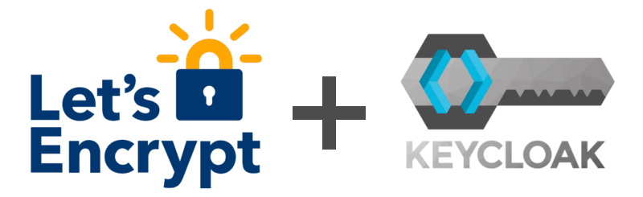

How to use Let's Encrypt certificates with Keycloak

Keycloak provides user federation, strong authentication, user management, fine-grained authorization, and more.
Here is a guide to enable HTTPS access to your Keycloak server using a free Let's Encrypt SSL certificate. The beauty of Let's Encrypt is its ease of use and the fact that it's free!
This guide assumes you have already installed Keycloak at /opt/keycloak/ using the official guide for bare metal installs, and now you want to enable HTTPS access. You need to have version 20 or higher.
In all the instructions below, be sure to replace <DOMAIN> with the actual domain you will be using. All commands in this guide must be run as root.
1. Install certbot
First you will need to install certbot. This depends on the Linux distro you are using.
For example, for apt-based distros such as Debian or Ubuntu, you can just run the following:
apt install certbot
2. Create HTTPS certificates
- Set up certificates:
$ certbot certonly --standalone --preferred-challenges http -d <DOMAIN>
3. Configure Keycloak to use Let's Encrypt certificates
- Change configuration:
vi /opt/keycloak/conf/keycloak.conf
- Add or update the following lines in that file:
https-certificate-file=/etc/letsencrypt/live/<DOMAIN>/cert.pem https-certificate-key-file=/etc/letsencrypt/live/<DOMAIN>/privkey.pem hostname=<DOMAIN> https-port=443 http-port=80
- Update keycloak config:
$ /opt/keycloak/bin/kc.sh build
- You're done! Now you can run the following command and Keycloak should now be accessible from the browser via HTTPS:
$ /opt/keycloak/bin/kc.sh start
4. Optional: Set up Keycloak as a systemd service
The official guide purposely leaves this open-ended because there are many ways in which you might want to handle the lifecycle of the Keycloak server. However, I think a good approach is to just use systemd.
4.1. Set up systemd service
- Create user and group:
$ useradd -g keycloak keycloak
- Give access to certificates:
$ chmod 0755 /etc/letsencrypt/{live,archive} $ chgrp keycloak /etc/letsencrypt/{live,archive} $ chgrp -h keycloak /etc/letsencrypt/live/<DOMAIN>/privkey.pem
- Give access to Keycloak directory:
$ chown -R keycloak:keycloak /opt/keycloak/
- Create systemd service:
$ vi /etc/systemd/system/keycloak.service
- Write the following contents into the file. You might need to add your chosen database service to the
Afterline, for examplepostgresql.serviceormysql.service.
[Unit] Description=Keycloak Application Server After=syslog.target network.target [Service] Type=idle User=keycloak Group=keycloak LimitNOFILE=102642 ExecStart=/opt/keycloak/bin/kc.sh start --optimized StandardOutput=append:/var/log/keycloak.log StandardError=inherit RestartSec=2s Restart=always AmbientCapabilities=CAP_NET_BIND_SERVICE [Install] WantedBy=multi-user.target
- Reload systemd config and start service:
$ systemctl daemon-reload $ systemctl start keycloak.service
4.2. Automatic Keycloak server restart when certificates are updated
- Make certbot restart Keycloak after updating certificates:
$ cd /etc/letsencrypt/renewal-hooks/deploy
$ vi restart-keycloak.sh
- Write these contents:
#!/bin/sh
systemctl restart keycloak
- Make the script executable:
$ chmod +x restart-keycloak.sh
You're done! Now Keycloak is set up as a systemd service and will start when your machine boots up.